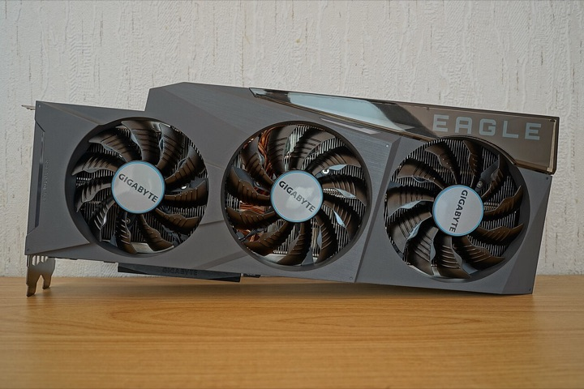
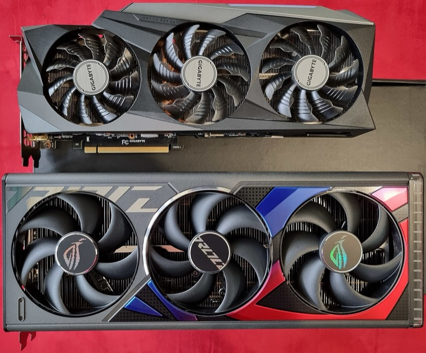

Performance figures come from the unlock projects' own benchmarks and user reports, plus one news write-up; they haven't been independently lab-tested. The wafer figures in Part 4 are my own estimate, built from published inputs plus two stated assumptions you can change. US-dollar prices are converted at about S$1.29 per US dollar (mid-November 2026), rounded. This explains what happened; it isn't a guide to modifying hardware, and it isn't investment advice.
Key findings
- An open-source unlock lifts the RTX 3090 from 75 to 125 TFLOPS of dense BF16 matrix compute (+65%), and the RTX 4090 from 165 to 329 (about 2×), with no VBIOS flash and no patched driver.
- AI work speeds up by roughly 25–55% in user reports. Games and chatbot replies speed up by 0%.
- Used prices are going up, not down: a used RTX 3090 now averages about S$2,100 on eBay, up about 29% in 90 days and above its launch price.
- Nvidia made US$193.7 billion from data centres last fiscal year and US$16.0 billion from gaming. Gaming is about 7% of the business.
Part 1What got unlocked
The unlock doesn't overclock anything. According to its authors, there's no patched driver and no VBIOS flash, and the card's normal power management and throttling stay in place. What changes is the speed of one kind of matrix maths on the card's tensor cores.

GeForce RTX 30 and 40 cards run half-precision matrix maths that adds up its results in higher precision (FP16 or BF16 with FP32 accumulation) at half the rate of the same maths adding up in FP16. That's in Nvidia's own architecture whitepapers. It's a product decision, not a physical limit: the unlock projects describe GeForce tensor cores as capped to half speed for this path.
"You paid for the whole flat. The master bedroom was locked."An analogy for product segmentation
Picture a developer who builds one flat, sells it to companies at full price and to families for less, and puts an electronic lock on the master bedroom for the families. The room is there; the key isn't.
How does the unlock open the door? Hardware Busters describes it as a firmware routine that runs before Nvidia's driver loads, flips the chip's "speed-select" setting, resets the card, and steps aside. The unmodified driver then takes over a card running at the full rate. It's Linux-only for now, and the authors list the RTX 30 series as stable with 100+ user reports and the RTX 40 series as experimental.
Part 2Who actually gains
If your card nearly doubled overnight, you'd expect games to fly. They don't. Scroll through what user reports show for each kind of work.
The lock was cut around gamers, not through them.
That's the real story: the segmentation was precise. Everything games use shipped at full speed. Only the path professionals rely on was held back. So when the lock came off, the people who gained were the ones who'd otherwise have bought a more expensive card.
Part 3The used-card rush
Plenty of gamers hoped this would break Nvidia's pricing. More compute for free should mean cheaper cards, right? The opposite is happening. Used RTX 3090s were already climbing on AI demand, with buyers after their 24 GB of memory, and the unlock gives AI buyers one more reason to want them.

Modding shops in China went further, soldering extra memory onto gaming cards so that bigger models fit on one card, and fitting them with server-style blower coolers.
| Card | Stock memory | Modded · reported price |
|---|---|---|
| RTX 4090 (blower, memory on both sides) | 24 GB | 48 GB · S$4,400–7,100 |
| RTX 4080 | 16 GB | 32 GB |
Why would an unlock that adds no frames push prices up? Because the card's buyer changed. A gamer asks whether a card buys enough evenings of fun, and walks away if not. For someone doing AI work, the card is a machine that earns: it replaces cloud rental fees, takes commercial work, and can be rented out by the hour. Tell that buyer the same old card now does up to twice the work, and they'll outbid every gamer in the market.
Part 4The wafer math
Maybe you skip the used market and wait for new cards to get cheaper. They probably won't, and the reason is a choice Nvidia makes with every wafer it buys from TSMC: data centre or gaming? Last fiscal year, data centres brought in US$193.7 billion and gaming US$16.0 billion. Nvidia was projected to take about 77% of the wafers made for AI chips in 2025.
| Input | Value | Basis |
|---|---|---|
| Wafer | 300 mm, 3 mm edge excluded | Standard chips-per-wafer method (Silicon Analysts) |
| B200 | 2 chips of ~830 mm² | Reported 814–850 mm² (PCGH / Morgan Stanley) |
| B200 price · cost | US$30–40K · ~US$6,400 | Analyst estimate (FourWeekMBA); cost includes memory and packaging |
| RTX 4090 chip (AD102) | 608 mm² | 608.44 mm² (Geektopia, citing AnandTech) |
| Share of chips that work | 80% | Assumption. Not published; applied to both |
| What Nvidia gets per 4090 chip | US$400 | Assumption. Not published |
Revenue given up per gaming chip = (B200 revenue per wafer − 4090 revenue per wafer) ÷ working 4090 chips per wafer. It's the data-centre revenue Nvidia forgoes each time a wafer becomes gaming chips instead.
On middle-of-the-range assumptions, a wafer cut into B200s brings in roughly 30 times the revenue of the same wafer cut into RTX 4090 chips. Economists measure the true cost of a choice by the best thing you gave up. By that measure, every gaming chip Nvidia makes costs it thousands of dollars in data-centre sales it didn't make: roughly S$15,000 at the default settings above.
Then there's the floor under the price. Shrinking transistors no longer makes them cheaper: TSMC's 2nm wafers are reportedly priced around US$30,000, about 50% more than 3nm, and analysts argue that at the leading edge, smaller no longer means cheaper. New flagship cards are built on a cost base that only goes up.
Part 5How we got here
There's an irony here: the customers now priced out are the ones who carried Nvidia's AI platform in the first place.
- 2006Nvidia unveils CUDA, letting graphics cards do general-purpose computing. Jensen Huang has said it was then a company with a 35% gross margin, and the bet raised costs while margins shrank.35%
- 2008Through the financial crisis and earnings misses, Nvidia's stock falls about 80% from December 2007 to December 2008.−80%
- Who carried itCUDA shipped on every GeForce card, so gamers' purchases put it in front of developers and researchers. Huang has credited GeForce with carrying CUDA to the people who built today's AI on it.
- 2025–26Nvidia becomes the first company worth US$5 trillion (about S$6.5 trillion). In fiscal 2026 it makes US$215.9 billion (about S$279 billion). Gaming is US$16.0 billion of it.7%
The unlock changes what an old card can do. It doesn't change who the card is worth most to. As long as a wafer is worth far more as AI chips, and an old card is worth more to someone earning money with it, gamers will keep losing the bidding war.
NotesSources
Each number and where it comes from.
- How the unlock works, supported cards, RTX 30-series before/after (RTX 3090: 75 → 125 TFLOPS BF16), user-reported gains by task, "no change" for gaming, decode and INT8/FP8/INT4, bit-identical outputs, sleep/resume caveat: Zagitta/gpu-unlock (project README; author and user reports).
- RTX 4090 before/after (165 → 329–331 TFLOPS), owner-run real GEMM gains of 12–34%, power draw: JustAResearcher/gpu-unlock-ada (project README).
- News write-up, mechanism ("speed-select" flip, function-level reset), RTX 3090 Ti +80%, ComfyUI 72 → 45 seconds: Hardware Busters, Oct 25, 2026.
- Half-rate FP32 accumulation on GeForce tensor cores: Nvidia Ampere GA102 architecture whitepaper; RTX 3090 tensor peaks also in Wccftech's RTX 3090 review.
- Used RTX 3090 prices (US$1,463 in September, US$1,626 in November 2026, +29% over 90 days): OpenClawDC price tracker; see also MindStudio on AI demand. RTX 3090 launch price US$1,499: Wccftech.
- Modded cards: Tom's Hardware, TweakTown (US$3,400), 3DTested (up to US$5,500), TweakTown (4080 32 GB).
- Nvidia fiscal 2026 (year to January 2026): revenue US$215.9B, data centre US$193.7B, gaming US$16.0B (7.4%): Nvidia Q4 and fiscal 2026 results. First US$5 trillion company, October 29, 2025: AP via Yahoo Finance.
- Wafer calculation inputs: B200 chip size and Nvidia’s 77% share of AI wafers: PC Games Hardware (Morgan Stanley); B200 price and cost: FourWeekMBA (an analyst estimate); AD102 size: Geektopia, citing AnandTech; chips-per-wafer method: Silicon Analysts. Share of working chips and Nvidia’s price per gaming chip are my assumptions, adjustable in the calculator.
- Rising cost at leading-edge nodes: SemiWiki, Simon-Kucher (both report or argue; wafer prices are media estimates).
- Nvidia history: OnMSFT (35% gross margin, Huang interview), Wccftech (CUDA on GeForce), Stratrix (−80%, Dec 2007–Dec 2008; other measures put calendar 2008 at about −76%).
- Currency: about S$1.29 per US dollar, mid-November 2026 mid-market (currency.wiki). Figures are rounded, so they move with the exchange rate.
Educational only. Not investment advice and not a guide to modifying hardware. This is a living document and will be updated as figures are checked.